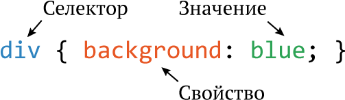

Основы CSS
Если HTML задаёт то, что находится на странице, то без CSS веб-страница выглядит как простой текстовый документ.
Документ CSS состоит из трёх основных частей
Селектор - указывает, к каким HTML тегам применить стиль.
Свойство - что именно меняем (цвет, размер шрифта, отступы).
Значение - как меняем (red, 16px, #FFF).
Селектор - указывает, к каким HTML тегам применить стиль.
Свойство - что именно меняем (цвет, размер шрифта, отступы).
Значение - как меняем (red, 16px, #FFF).

С помощью таблиц стилей разработчик управляет цветами, шрифтами, отступами и расположением блоков на странице. Главное преимущество CSS заключается в разделении содержания и оформления. Это позволяет менять внешний вид всего сайта, корректируя лишь один файл стилей, не затрагивая при этом саму информацию. В рамках моего проекта использование CSS стало решающим фактором для подтверждения гипотезы: написанный вручную код позволил сделать сайт "легким" и быстрым, исключив лишние элементы, которые часто добавляют автоматические конструкторы».